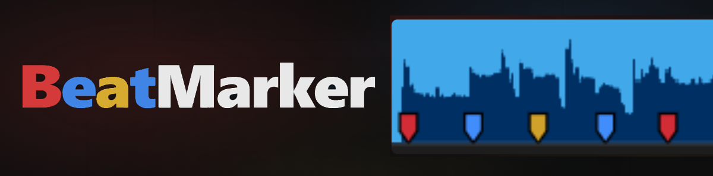
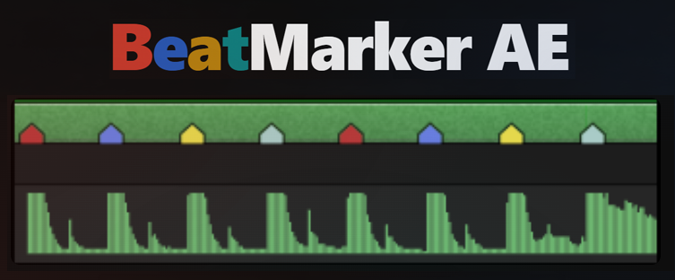
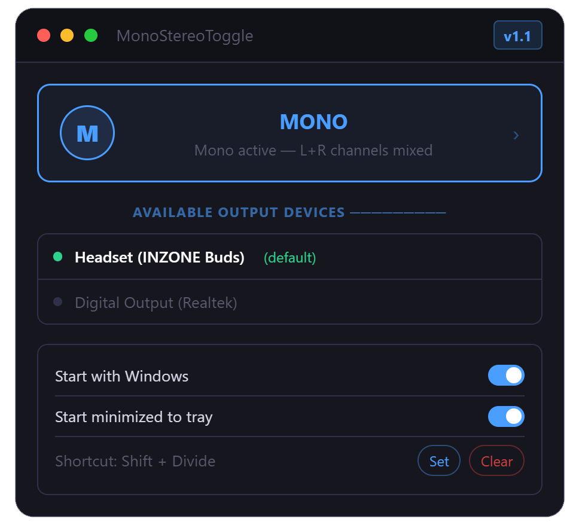

Plugins and utilities built to speed up music-synced editing in Adobe Premiere Pro, After Effects, and Windows.

Beat detection plugin for Adobe Premiere Pro — auto-generates colored beat markers on source clips for music-synced editing.

Beat detection plugin for Adobe After Effects — auto-generates colored beat markers on audio layers for music-synced editing.

A lightweight Windows 11 desktop utility that lets you instantly switch your audio output between Mono and Stereo modes — the same setting found in Windows Settings → System → Sound.